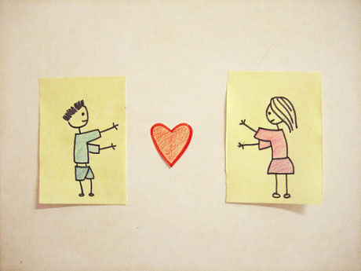

《请你为我画一只小绵羊》
分享 转载 复制地址
请你为我画一只小绵羊，
一只很小很小，可以活很久很久的绵羊。
我会拿一个最晶莹最剔透的玻璃杯，
盛上满满的牛奶，和满满的许留山芒果布丁。
看着它满脸幸福 一下一下地舔，
然后听它软软地说：“…真好~”
请你为我画一只小绵羊，
一只很小很小，可以活很久很久的绵羊。
它会坏坏地笑，蹦蹦跳跳，在你腿上蹭来蹭去，
把小身子摆来摆去，没心没肺地撒娇，
然后若无其事地装出一副一本正经的样子。
请你为我画一只小绵羊，
一只很小很小，可以活很久很久的绵羊。
我会任它捣乱，在地毯上滚来滚去，
然后看着它一副唯我独尊的臭P样，
傻傻地笑。
请你为我画一只小绵羊，
一只很小很小，可以活很久很久的绵羊。
我会天天守着他锻炼。
免得他悄悄偷懒，一不留神，又让小肚肚跑了出来。
我还会好好看管他的钱包，
不要再让他在大热天里成日请一大帮子名字都叫不全的人吃成箱成箱的雪糕。
不要再让他傻乎乎不知道该买哪栋房子好。
不要再让他想也不想，就小手一挥在工资支票的数额栏里写上“情义”二字。
不要再让他在月薪一千元的时候，为了照应家人每月只留给自己100元用。
请你为我画一只小绵羊，
一只很小很小，可以活很久很久的绵羊。
我会捧着它到处炫耀，
却又舍不得把它亮给别人看。
我会小心翼翼，生怕它被人抢了去，生怕我的爱一不小心就会伤害到它。
因为这是一只我这辈子见过的最美好的绵羊，
我把整个世界都捧到你的面前，却还是不够。
不够，不够，远远不够……
请你为我画一只小绵羊，
一只很小很小，可以活很久很久的绵羊。
我会用兰花和百合堆砌它的窝，
洁白、芬芳、纯净，
一如它的笑颜。
然后日日夜夜守在他身边，
唱着安眠曲，轻拍着它软绵绵温热的后背，看着他静静安睡。
请你为我画一只小绵羊，
一只很小很小，可以活很久很久的绵羊。
我会趁它睡着的时候千百次地凝望它的睡颜，
小心翼翼地摸摸它浓浓的眉毛，拨弄它长长的睫毛，
捏捏它的小脸蛋，戳戳它若隐若现的小酒窝。
然后偷偷地在那嘟嘟唇上留下一个印记。
从此，再也不用一遍遍伸出手去却只触碰到冰凉的屏幕，
再也不用一遍遍抚摸着照片热泪盈眶，
再也不用握着话筒一遍遍哭到肝肠寸断，
再也不用害怕握不住透明的你。
不由得让我片刻恍惚，这一切究竟是梦境还是现实。
请你为我画一只小绵羊，
一只很小很小，可以活很久很久的绵羊。
我会时刻把它用毛毯紧紧裹住，抱在怀里，
此后，我永远永远也不会再让它在气温低于3度的天气里，
穿着薄薄的背心，淋着雨，双脚赤裸着踩在刺骨冰冷的水里，
只能抱着毛绒唐老鸭玩具取暖，然后发起高烧。
永远永远也不会 让他那么的令人心疼。
请你为我画一只小绵羊，
一只很小很小，可以活很久很久的绵羊。
我会紧紧跟随他，一步不离，在它疾病缠身时，昼夜不休守候床头，
帮它求医问药，端茶送水，
一口一口喂它吃饭，一脸一脸地流泪。
我欲与君相知，长命无绝衰！
山无棱，江水为竭，冬雷震震，夏雨雪，天地合，乃敢与君绝。
请你为我画一只小绵羊，
一只很小很小，可以活很久很久的绵羊。
我会为了他而学会 欣赏美好，宽容丑恶，明辨是非，
认清黑白，珍惜拥有，感恩得到，释然失去。
他的眼睛过分好看，
于是我用手遮住他的双眼，因为这个世界太不可爱，
而过于天真的他却固执地不肯闭上。
最后他待人以诚，人反相诬。
大家都骂他是傻瓜。
而我却终于明白，为什么在他面前，我们失语。
请你为我画一只小绵羊，
一只很小很小，可以活很久很久的绵羊。
多数的时候，我只会轻轻地抱抱它，
把头深深地埋进它白白的羊毛里，
嗅嗅那温软绵热的温暖气息，
用小动物的方式互相取暖。
我会听着你的心跳，一下又一下，
与你共同活在这座星球上，与你共同呼吸，一次又一次，节奏一致，
踩着印有你足迹的同一方热土，望着你抬头眺望过的同一片蓝天。
美好得太不真实。 |
请为我画一只小绵羊，
一只很小很小，可以活很久很久的绵羊。
我会千百次地告诉他：
“我爱你，你是上天赐给我的礼物。
只要你在那里，我就永远不会倒下。”
我会在他最伤心的时候让他依靠，给他安慰，不离不弃。
在他的天空阴霾遍布的时候带他去看月亮，
把自己心里的微光尽数照给他，哪怕我将从此黯淡消逝。
我不要什么轰轰烈烈，只要他灿若暖阳的笑脸。
君为花，我为叶，举案齐眉，咫尺天涯，地老天荒。
请为我画一只小绵羊，
一只很小很小，可以活很久很久的绵羊。
我会在别人伤害它、玷污他的时候，奋不顾身地去保护他。
在他绝望的时候，
双手颤抖着为他点燃一支蜡烛，然后再为他吟唱一首简单的歌。
……
但愿你的眼睛，只看得到笑容，
但愿你流下每一滴泪，都让人感动。
但愿你以后每一个梦，不会一场空。
天上人间，如果真值得歌颂，
也是因为有你，才会变得闹哄哄。
天大地大，世界比你想象中朦胧，
我不忍心再欺哄，但愿你听的懂。
……
我会告诉他，不要再傻傻付出，不是所有人都懂得什么是爱。
告诉他，如果这个世界真的如此肮脏龌龊，
至少还有我，为你站岗。
请你为我画一只小绵羊，
一只很小很小，可以活很久很久的绵羊。
让他永远不要离开我，不要连墓碑都不肯留下让我在前面彷徨。
十年生死两茫茫，不思量，自难忘。
路远遥遥难凭信，心有戚戚近天涯。
在这场爱里，我愿用毕生与他相守，用思念换白头。
好好地伤心，然后好好地快乐。
请你为我画一只小绵羊，
一只很小很小，可以活很久很久的绵羊。
我愿踏遍天涯海角，为他找到世上最美、最好的颜色。
那是比土耳其更炫目的蓝，比落雪更剔透的白，比烈焰更火热的红，
比飞烟更迷离的灰，比鸢尾更诡异的紫，比矢车菊更牵缠的黄……
都是属于他的颜色。
只属于他的颜色。
君似明月我似雾，雾随月隐空流露。
忆君泪落东流水，岁岁花开知为谁。
我不要也不会让他像玫瑰那样慢慢盛开再慢慢萧条，
不要像寒梅那样独自凌放再独自凋败，
不要像烟花那样纠缠盛放再纠缠洒落。
我只要他安安稳稳地做一只小绵羊，
一只很小很小，可以活很久很久的小绵羊。
从此我再也不用害怕在没有星星的夜里哭泣，
再也不用害怕找不到你的方向，听不到你的消息，
再也不用佯装很快乐，明明流着眼泪却含着笑说我很幸福。
再也不用担心我所拥有的只是一个转瞬即逝的灵魂，
也不用害怕你在我怀里下一秒就灰飞烟灭。
记取相思，愿逐月华流照君。
这只小绵羊，让我满心满眼都是他。
看不到路边旖旎的风景，看不见天边滑落的流星，
我的世界里，
一天、一地、一个你。
温暖他，让他快乐。
宠爱他，让他欢喜。
安慰他，帮他分忧。
尊重他，让他幸福。
保护他，让他平安。
只缘感君一回顾，使我思君朝与暮。
请你为我画一只小绵羊，
一只很小很小，可以活很久很久的绵羊。
我会在耳畔，为他日日轻吟 仓央嘉措的文字。
……那一日，我升起风马，不为乞福，只为守候你的到来。
那一夜，我听了一宿梵唱，不为参悟，只为沾染你的一丝气息。
那一月，我摇遍所有经筒，不为超度，只为触碰你的指尖。
那一年，我磕长头 匍匐在山路。不为觐见，只为能贴着你的温暖。
那一世，我转山转水转佛塔，不为修来世，只为途中与你相遇。
那一瞬，我飞升成仙，不为长生，只为佑你喜乐平安。
从此，
我再也不必朝夕心碎于“君生我未生，我生君已老。恨不生同时，日日相伴老”的悲拗，
让我们就这样静静地在时间的长河中相遇，
然后温暖你，
就像你温暖我一样。
请为我画一只小绵羊，
一只很小很小，可以活很久很久的绵羊。
不要让它变成小王子，被伤害 然后孤独死去的小王子。
就让
岁月静好，现世安稳。
多好。
请你为我画一只小绵羊，
一只很小很小，可以活很久很久的小绵羊。
然后
我将在每一个深夜里，为它把天上的星星点亮。
|
When we face two choices ,the coin will give us a right answer.Not coins play a role ,but you know what you hope when you throw it into air.
——当面对两个选择时抛硬币总能奏效，并不是因为它总能给出对的答案，而是在你把它抛在空中的那一秒里，你突然知道你希望它是什么。
安东尼——《橙》
[ 你走的那天，阳光如此灿烂 躲在黑暗里的我 竟然相信了你那句“祝你 幸福”]
The day you left , I hide in shadow.There is full of beautiful sunshine outside, which make me even believe yours '' wish you happy "
 |
[ 对你的爱 是无休止的追逐 奇怪的是 即使知道总也追不上你 也觉得 很幸福呢 ]
The way I like you , it is like playing carouse. I wonder why even I know I will never catch you , but still I feel lucky ...
[不知道 如何爱你 看着你 是我唯一的方式]
I don't know how to love you.Looking at you is the only way I know.
[现在 执着追求的事 将来必定有一天变成 不重要的]
The things that we persistently chase after now,will become unimportant someday.
爱和喜欢是同义词么
不过 爱一朵花就为她浇水 喜欢一朵花就把她摘下来
喜欢和讨厌是反义词么
喜欢一朵花就把她摘下来 讨厌一朵花夜会把她摘下来
一起看电影时买的薯片 放到保鲜袋里干燥保存 两天过期
一起逛花街买的清香栀子 天天浇水晒太阳 花开一季
一起拍的宝丽来相片 小心翼翼的藏进相册里 几十年后过期
那么 一起制造的回忆 只剩下我一个人保管 多久……会过期呢？
|